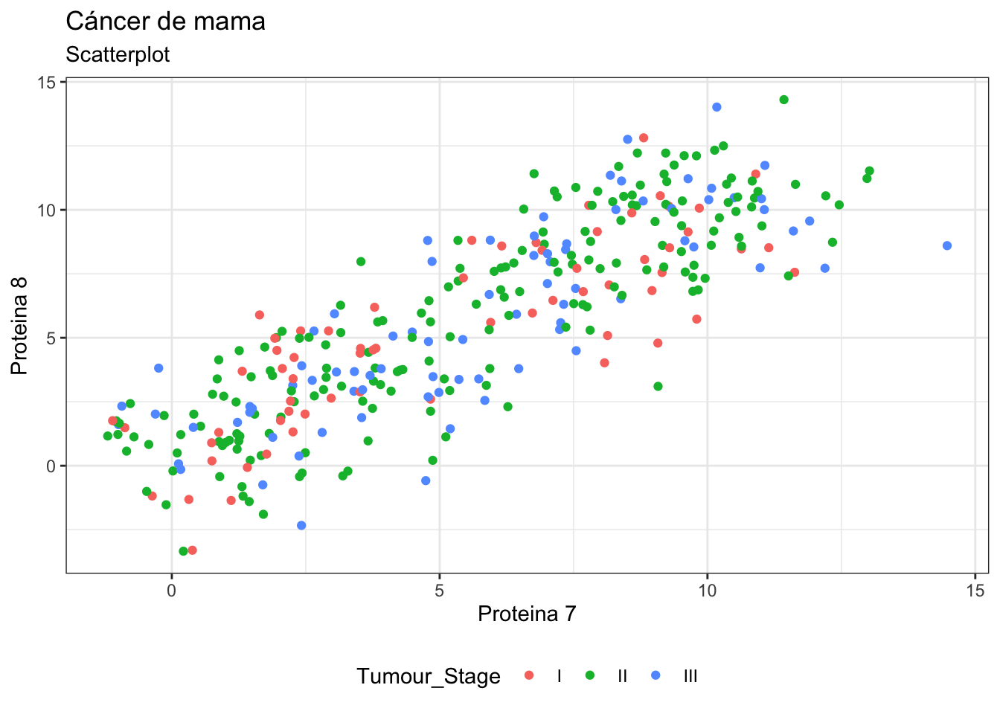
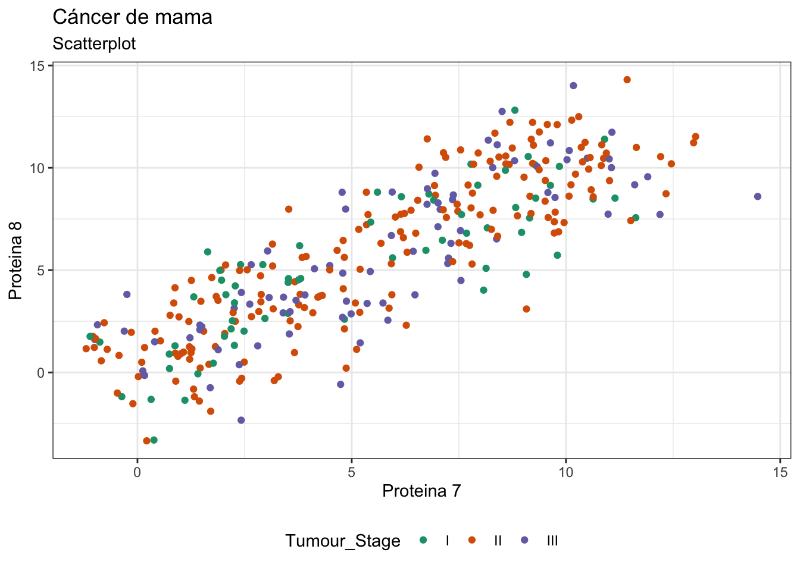
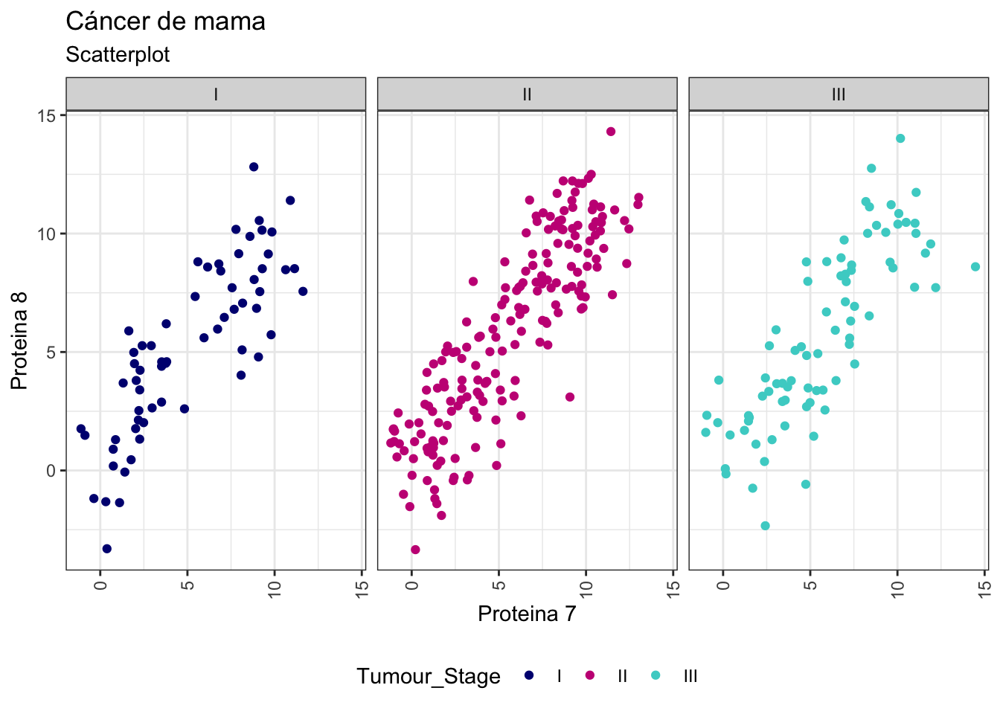
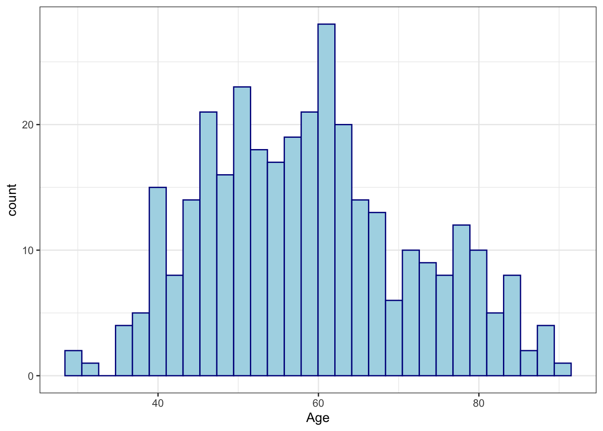
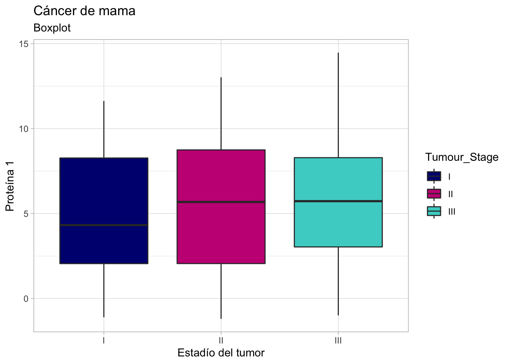
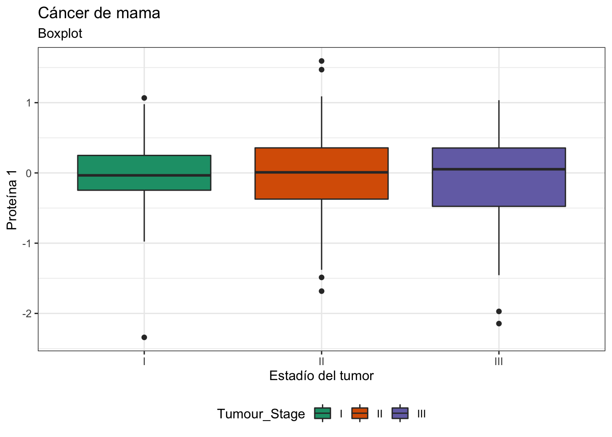

Capítulo 9 Gráficos en R
R es un lenguaje de programación y entorno computacional dedicado a la estadística que dispone de múltiples funciones diseñadas para la representación gráfica de datos.
Revisa la presentación completa aquí
9.1 Tipos de gráficos en R
Existe una gran variedad de gráficos que pueden utilizarse según el tipo de datos que se tengan.

9.2 Paqueterías para graficar en R
Existen diversas paqueterías en R que facilitan la creación de gráficos. Cada paquetería permite crear diversos tipos de gráficos.
9.3 Gráficos de base R
R cuenta con el paquete base de graphics para la construcción de gráficos. La función plot es la función básica que permite crear:
- Líneas
- Barras
- Boxplots
- Matrices de dispersión
9.4 Paletas de colores en R
Los colores son uno de los elementos esenciales de un gráfico. Forman parte de la estética y por tanto, los podemos utilizar tanto para representar variables, como para destacar elementos dentro de la visualización.
Aquí y aquí puedes revisar los colores disponibles en R que puedes usar en tus gráficas.
9.5 ggplot2
ggplot2 es una de las paqueterías más populares en R para crear una gran variedad de gráficos. ggplot2 es un sistema para la creación declarativa de gráficos basado en la gramática de gráficos. En esta gramática, se separan los elementos o las partes de un gráfico en diferentes capas o layers, y así es más fácil modificarlos.
ggplot2 funciona a través de la grámatica de gráficos donde se dan los datos, las variables que queremos a graficar y la geometría deseada.
Instalación de ggplot2
install.packages("tidyverse")
install.packages("ggplot2")Cargar la librería de trabajo
library(ggplot2)Importamos el set de datos que puedes descargar de aquí
datos <- read.csv("BRCA_1.csv")head(datos)## Patient_ID Age Gender Protein1 Protein2 Protein3 Protein4 Protein5
## 1 TCGA-D8-A1XD 36 FEMALE 0.080353 0.42638 0.547150 0.273680 -0.8377779
## 2 TCGA-EW-A1OX 43 FEMALE -0.420320 0.57807 0.614470 -0.031505 3.9312819
## 3 TCGA-A8-A079 69 FEMALE 0.213980 1.31140 -0.327470 -0.234260 12.0651683
## 4 TCGA-D8-A1XR 56 FEMALE 0.345090 -0.21147 -0.193040 0.124270 1.3747799
## 5 TCGA-BH-A0BF 56 FEMALE 0.221550 1.90680 0.520450 -0.311990 3.5984373
## 6 TCGA-AO-A1KQ 84 MALE -0.081872 1.72410 -0.057335 0.043025 10.4367737
## Protein6 Protein7 Protein8 Tumour_Stage Histology
## 1 1.121232 1.2252707 1.693330 III Infiltrating Ductal Carcinoma
## 2 4.004814 3.7966065 3.818823 II Mucinous Carcinoma
## 3 8.089310 7.0638903 7.970331 III Infiltrating Ductal Carcinoma
## 4 2.158426 10.8775737 10.461724 II Infiltrating Ductal Carcinoma
## 5 2.138539 0.5366344 1.543580 II Infiltrating Ductal Carcinoma
## 6 9.154762 5.3596392 3.372255 III Infiltrating Ductal Carcinoma
## ER.status PR.status HER2.status Surgery_type Date_of_Surgery
## 1 Positive Positive Negative Modified Radical Mastectomy 15-Jan-17
## 2 Positive Positive Negative Lumpectomy 26-Apr-17
## 3 Positive Positive Negative Other 08-sep-17
## 4 Positive Positive Negative Modified Radical Mastectomy 25-Jan-17
## 5 Positive Positive Negative Other 06-may-17
## 6 Positive Positive Negative Modified Radical Mastectomy 18-sep-17
## Date_of_Last_Visit Patient_Status
## 1 19-jun-17 Alive
## 2 09-nov-18 Dead
## 3 09-jun-18 Alive
## 4 12-jul-17 Alive
## 5 27-jun-19 Dead
## 6 15-nov-21 Alivenames(datos)## [1] "Patient_ID" "Age" "Gender"
## [4] "Protein1" "Protein2" "Protein3"
## [7] "Protein4" "Protein5" "Protein6"
## [10] "Protein7" "Protein8" "Tumour_Stage"
## [13] "Histology" "ER.status" "PR.status"
## [16] "HER2.status" "Surgery_type" "Date_of_Surgery"
## [19] "Date_of_Last_Visit" "Patient_Status"Eliminar datos con NA
datos <- na.omit(datos)9.5.1 Scatterplots
Vamos a crear un gráfico del tipo scatterplot muy básico con ggplot2.
ggplot(datos, aes(x = Protein7, y = Protein8)) +
geom_point()
Ahora vamos a colorear todos los puntos utilizando geom_point(color).
ggplot(datos, aes(x = Protein7, y = Protein8)) +
geom_point(color="red", size= 2)
Con el argumento color coloreamos por estadío de tumor.
ggplot(datos, aes(x = Protein7, y = Protein8, color= Tumour_Stage)) +
geom_point()+
labs(x = "Proteina 7" ,y = "Proteina 8", subtitle = "Scatterplot")+
ggtitle("Cáncer de mama")
Para agregar las etiquetas de los ejes usamos labs(), mientras que ggtitle()permite agregar el título al gráfico como se muestra a continuación.
ggplot(datos, aes(x = Protein7, y = Protein8, color= Tumour_Stage)) +
geom_point()+
labs(x = "Proteina 7" ,y = "Proteina 8", subtitle = "Scatterplot")+
ggtitle("Cáncer de mama")
shape permite modificar la forma del punto. En este caso vamos a poner diferentes puntos según la especie de flor.
ggplot(datos, aes(x = Protein7, y = Protein8, color=Tumour_Stage, shape=Tumour_Stage)) +
geom_point(size=3) +
theme_bw()+
labs(x = "Proteina 7" ,y = "Proteina 8", subtitle = "Scatterplot")+
ggtitle("Cáncer de mama")
Cambiamos la posición de la leyenda en nuestro gráfico
ggplot(datos, aes(x = Protein7, y = Protein8, color= Tumour_Stage)) +
geom_point()+
labs(x = "Proteina 7" ,y = "Proteina 8", subtitle = "Scatterplot")+
ggtitle("Cáncer de mama")+
theme_bw()+
theme(legend.position = "bottom")
Otra opción para modificar los colores es utilizando scale_colour_manual(). Con este argumento indicamos los colores que queremos usar para nuestro gráfico basados en la paleta de colores.
ggplot(datos, aes(x = Protein7, y = Protein8, color= Tumour_Stage)) +
geom_point()+
labs(x = "Proteina 7" ,y = "Proteina 8", subtitle = "Scatterplot")+
ggtitle("Cáncer de mama")+
theme_bw()+
theme(legend.position = "bottom")+
scale_colour_manual(values=c("navy", "mediumvioletred", "mediumturquoise"))
9.5.2 RcolorBrewer
RcolorBrewer es una paquetería exclusiva de colores que podemos usar en nuestros gráficos.
install.packages("RColorBrewer")library(RColorBrewer)Conocer todas las paletas de colores disponibles en RColorBrewer.
display.brewer.all()
Vamos a elegir la paleta “Dark2” para personalizar nuestro gráfico. Usamos el argumento scale_colour_brewer() como se muestra a continuación
ggplot(datos, aes(x = Protein7, y = Protein8, color= Tumour_Stage)) +
geom_point()+
labs(x = "Proteina 7" ,y = "Proteina 8", subtitle = "Scatterplot")+
ggtitle("Cáncer de mama")+
theme_bw()+
theme(legend.position = "bottom")+
scale_colour_brewer(palette="Dark2")
9.5.3 Múltiples gráficos en una sola imagen
ggplot(datos, aes(x = Protein7, y = Protein8, color= Tumour_Stage)) +
geom_point() +
facet_wrap(~Tumour_Stage)+
labs(x = "Proteina 7" ,y = "Proteina 8", subtitle = "Scatterplot")+
ggtitle("Cáncer de mama")+
theme_bw()+
theme(legend.position = "bottom")+
scale_colour_manual(values=c("navy", "mediumvioletred", "mediumturquoise")) +
theme(axis.text.x = element_text(angle = 90, vjust = 0.5, hjust=1))
9.5.4 Histogramas
ggplot(datos, aes(x=Age))+
geom_histogram(bins=30, color="darkblue", fill="lightblue")+
theme_bw()
Colorear histogramas por género
ggplot(datos, aes(x=Age, color= Gender))+
geom_histogram(bins=30, fill= "White")+
theme_gray()+
labs(x = "Edad" ,y = "Frecuencia", subtitle = "Histograma")+
ggtitle("Cáncer de mama")
p<- ggplot(datos, aes(x=Age, fill= Gender))+
geom_histogram(bins=30, color= "Black", alpha=0.6)+
theme_gray()+
labs(x = "Edad" ,y = "Frecuencia", subtitle = "Histograma")+
ggtitle("Cáncer de mama")
p + scale_fill_brewer(palette="Accent") +
theme_gray()+
theme(legend.position="top")
9.5.5 Boxplots
names(datos)## [1] "Patient_ID" "Age" "Gender"
## [4] "Protein1" "Protein2" "Protein3"
## [7] "Protein4" "Protein5" "Protein6"
## [10] "Protein7" "Protein8" "Tumour_Stage"
## [13] "Histology" "ER.status" "PR.status"
## [16] "HER2.status" "Surgery_type" "Date_of_Surgery"
## [19] "Date_of_Last_Visit" "Patient_Status"Creamos un boxplot básico
ggplot(datos, aes(y = Protein7, x= Tumour_Stage)) +
geom_boxplot()
Personalizamos el boxplot
ggplot(datos, aes(y = Protein7, x= Tumour_Stage, fill=Tumour_Stage)) +
geom_boxplot()+
ggtitle("Cancer de mama")+
theme_light()+
labs(subtitle = "Boxplot", y= "Proteína 7", x="Estadío del tumor")
Colorear manualmente los boxplots
ggplot(datos, aes(y = Protein7, x= Tumour_Stage, fill=Tumour_Stage)) +
geom_boxplot()+
ggtitle("Cáncer de mama")+
theme_light()+
labs(subtitle = "Boxplot", y= "Proteína 1", x="Estadío del tumor")+
scale_fill_manual(values=c("navy", "mediumvioletred", "mediumturquoise"))
Colorear utilizando paletas de colores
ggplot(datos, aes(y = Protein1, x= Tumour_Stage, fill=Tumour_Stage)) +
geom_boxplot()+
ggtitle("Cáncer de mama")+
labs(subtitle = "Boxplot", y= "Proteína 1", x="Estadío del tumor")+
theme_bw()+
theme(legend.position = "bottom")+
scale_fill_brewer(palette="Dark2")
Boxplots agrupados por mutaciones de HER2 y estadío de tumor
ggplot(datos, aes(y = Protein7, x= Tumour_Stage, fill=HER2.status)) +
geom_boxplot()+
scale_fill_brewer(palette="Set2")+
theme_bw()+
theme(legend.position = "bottom")+
ggtitle("Cáncer de mama")+
labs(subtitle = "Boxplot", y= "Proteína 17", x="Estadío del tumor")
Multiples boxplots separados por mutaciones de HER2 y estadío de tumor
ggplot(datos, aes(y = Protein7, x= Tumour_Stage, fill=HER2.status)) +
geom_boxplot() +
facet_wrap(~HER2.status)+
scale_fill_brewer(palette = "PiYG")+
theme_bw()+
theme(legend.position = "bottom")+
ggtitle("Cáncer de mama")+
labs(subtitle = "Boxplot", y= "Proteína 7", x="Estadío del tumor")